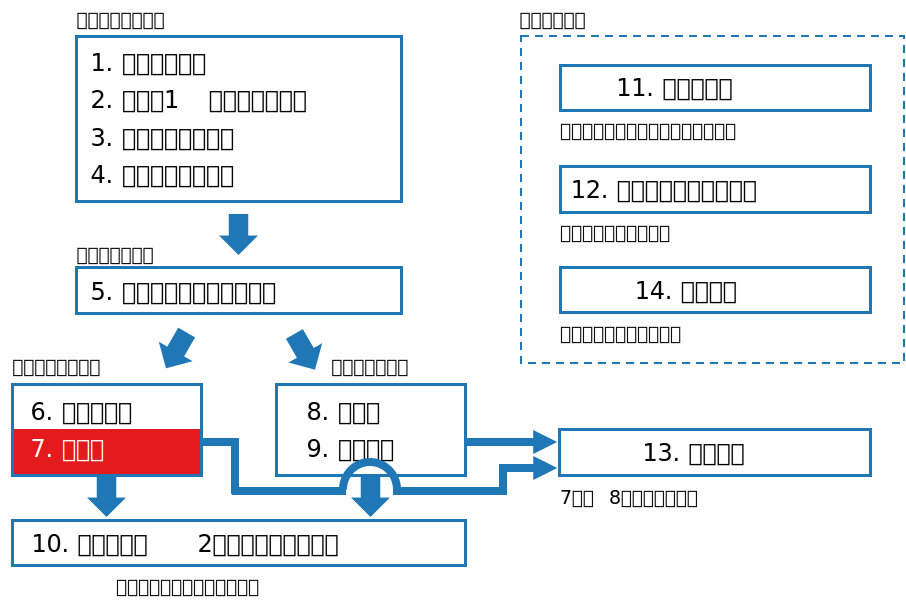
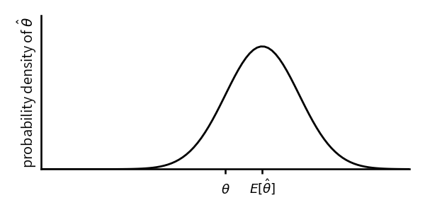

class: middle, center # 数理統計学特論I<br>第7回 推定論 奥 牧人 (和漢研) 2022/06/01 --- # 前回の復習 前回の目的 * 十分統計量とその関連用語の意味を理解すること 前回の達成目標 * 十分統計量の意味を説明できる。 * 十分統計量の分解定理を説明できる。 * ラオ・ブラックウェルの定理を説明できる。 * 完備十分統計量の意味を説明できる。 --- # 今回の位置付け  --- # 今回の目的と達成目標 目的 点推定の最適性に関する理論について理解すること 達成目標 * 不偏推定量の意味を説明できる。 * フィッシャー情報量の意味を説明できる。 * クラメル・ラオの不等式の意味を説明できる。 * 不偏推定の問題点を説明できる。 * 最尤推定量の意味と漸近有効性を説明できる。 --- # 予習用キーワードの確認 * 不偏推定 * 尤度関数 --- # Outline 1. 点推定論の枠組み 2. 不偏推定量とフィッシャー情報量 3. 完備十分統計量に基づく不偏推定量 4. 不偏推定の問題点 5. 最尤推定量 6. クラメル・ラオの不等式の一般化 --- # Outline 1. **点推定論の枠組み** 2. 不偏推定量とフィッシャー情報量 3. 完備十分統計量に基づく不偏推定量 4. 不偏推定の問題点 5. 最尤推定量 6. クラメル・ラオの不等式の一般化 --- # 推定における記法と設定 * 推定では、決定関数 $\delta(X)$ のことを $\hat\theta(X)$ または単に $\hat\theta$ と書き、推定量と呼ぶ * リスク関数として平均二乗誤差を使う $$R(\theta,\hat\theta)=E[(\hat\theta-\theta)^2]$$ * バイアス-バリアンス分解 (ここだけ $E[\hat\theta]=\mu$ とおく) $$\begin{align}E[(\hat\theta-\theta)^2]&=E[(\hat\theta-\mu+\mu-\theta)^2]\\\\&=E[(\hat\theta-\mu)^2]+E[(\mu-\theta)^2]+0\\\\&=V[\hat\theta]+(\mu-\theta)^2\end{align}$$ * $\mu-\theta$ をバイアスと呼ぶ --- # バイアスとバリアンス * 母集団から標本を抽出して $\hat\theta$ を計算、を何度も行うとする。 * バリアンス $V[\hat\theta]$ は、推定値のバラツキの大きさを表す。 * バイアス $E[\hat\theta]-\theta$ は、推定値の平均と真の値のズレを表す。  --- # 不偏推定量 * $\hat\theta$ が不偏推定量であるとは、以下が成り立つこと $$E[\hat\theta]=\theta,\quad\forall\theta$$ * 例、不偏分散 $$s^2=\frac{1}{n-1}\sum_{i=1}^n(X_i-\bar X)^2$$ * (参考) 最尤推定の場合 <div>$$s_n^2=\frac{1}{n}\sum_{i=1}^n(X_i-\bar X)^2$$</div> --- # Outline 1. 点推定論の枠組み 2. **不偏推定量とフィッシャー情報量** 3. 完備十分統計量に基づく不偏推定量 4. 不偏推定の問題点 5. 最尤推定量 6. クラメル・ラオの不等式の一般化 --- # 一様最小不偏推定量 * 不偏推定の場合、平均二乗誤差は分散 $V[\hat\theta]$ のみになる $$E[(\hat\theta-\theta)^2]=V[\hat\theta]$$ * 従って、不偏推定量の中では、分散が最小となるものが最適 * **一様最小分散不偏推定量** (Uniformly Minimum Variance Unbiaced estimator, 略して **UMVU** と書く) * 不偏推定量 $\hat\theta^*$ が UMVU であるとは、任意の不変推定量 $\hat\theta$ に<br>対して以下が成り立つこと $$V[\hat\theta^*]\leq V[\hat\theta],\quad\forall\theta$$ --- # 話の流れを整理 * 不偏推定量 * UMVU (不偏の中で最適) * UMVU であることを示す方法 1. クラメル・ラオの不等式を使う方法 (フィッシャー情報量を含む) 2. 完備十分統計量を使う方法 * 最尤推定量 --- # フィッシャー情報量 * $X=(X_1,\ldots,X_n)$ の確率質量関数または確率密度関数 $p(x)$ を、パラメータ $\theta$ を明示して $f(x,\theta)$ と書く * フィッシャー情報量 $$I_n(\theta)=E\left[\left(\frac{\partial}{\partial\theta}\log f(x,\theta)\right)^2\right]$$ * 対数尤度関数 $\ell(\theta)=\log f(x,\theta)$ とし、$\ell'(\theta)=\partial\ell(\theta)/\partial\theta$ と書けば、以下のように略記できる $$I_n(\theta)=E[\ell'(\theta)^2]$$ * $X_1,\ldots,X_n\stackrel{i.i.d.}{\sim}F$ の場合 $I_n(\theta)=n I_1(\theta)$ が成り立つ <!-- # フィッシャー情報量の性質 * 微分と積分が交換出来るとき、 $$E[\ell'(\theta)]=0$$ * 従って、以下の見方が出来る $$I_n(\theta)=E[\ell'(\theta)^2]=V[\ell'(\theta)]$$ * また、計算上は以下の公式も使える $$I_n(\theta)=-E[\ell''(\theta)^2]$$ --> --- # クラメル・ラオの不等式 * クラメル・ラオの不等式 ($\hat\theta$ は不偏推定量) $$V[\hat\theta]\geq\frac{1}{I_n(\theta)}$$ ただし、$I_n(\theta)>0$ と、微分と積分が交換可能なこと (正則条件) を仮定 * [定理] クラメル・ラオの不等式が成り立つ場合、不偏推定量 $\hat\theta^*$ が以下を満たせば UMVU である $$V[\hat\theta^*]=\frac{1}{I_n(\theta)},\quad\forall\theta$$ --- # 例 * $X_1,\ldots,X_n\stackrel{i.i.d.}{\sim}N(\mu,\sigma^2)$ の $\mu$ の推定量 $\bar X$ について計算 * $X_i$ の確率密度関数 ($I_n(\theta)=n I_1(\theta)$ より $1$ 個分で良い) $$f(x_i,\mu)=\frac{1}{\sqrt{2\pi}\sigma}\exp\left(-\frac{(x_i-\mu^2)}{2\sigma^2}\right)$$ * 対数尤度関数 $$\ell(\mu)=\log f(x_i,\mu)=-\frac{(x_i-\mu)^2}{2\sigma^2}-\frac{1}{2}\log(2\pi\sigma^2)$$ * $\mu$ で偏微分 $$\ell'(\mu)=\frac{\partial}{\partial\mu}\ell(\mu)=\frac{x_i-\mu}{\sigma^2}$$ --- # 例、続き * フィッシャー情報行列 $$I_1(\mu)=E[\ell'(\mu)^2]=E\left[\frac{(X_i-\mu)^2}{\sigma^4}\right]=\frac{1}{\sigma^2}$$ * クラメル・ラオの不等式の下限は、 $$\frac{1}{I_n(\mu)}=\frac{1}{nI_1(\mu)}=\frac{\sigma^2}{n}$$ * これは $V[\bar X]$ に一致するので、$\bar X$ は確かに UMVU である。 $$\bar X\sim N\left(\mu,\frac{\sigma^2}{n}\right)$$ --- # 分散は? * クラメル・ラオの不等式では不偏分散 $s^2$ が UMVU であることを示せない * UMVU なのだが、下限を達成しない * 次に紹介する別の方法で証明する --- # Outline 1. 点推定論の枠組み 2. 不偏推定量とフィッシャー情報量 3. **完備十分統計量に基づく不偏推定量** 4. 不偏推定の問題点 5. 最尤推定量 6. クラメル・ラオの不等式の一般化 --- # 完備十分統計量とUMVU [定理] * 完備十分統計量 $T$ の関数である不偏推定量 $\hat\theta^*(T)$ は一意に定まり UMVU となる。 * また、任意の不偏推定量を $\hat\theta$ とするとき $E[\hat\theta|T]$ は $\hat\theta^*(T)$ に一致する。 --- # 証明 * 完備統計量の関数となる不偏推定量は一意であることを示す * $\hat\theta_1$, $\hat\theta_2$ を不偏推定量とし、$g(T)=\hat\theta_1(T)-\hat\theta_2(T)$ とおけば $$E[g(T)]=\theta-\theta=0,\quad\forall\theta$$ なので、完備性の定義より $\hat\theta_1(T)\equiv\hat\theta_2(T)$ * 続いて、任意の不偏推定量 $\hat\theta$ に対して、$T$ を完備十分とし $$\hat\theta^*(T)=E[\hat\theta|T]$$ を作ると、不偏となるので一意に定まる。$T$ は十分統計量なのでラオ・ブラックウェルの定理を適用すれば $$V[\hat\theta^*]\leq V[\hat\theta],\quad\forall\theta$$ --- # 例 * 母集団が正規分布 $N(\mu,\sigma^2)$ のとき、以下は完備十分統計量 <div>$$T_1=\sum_{i=1}^n X_i,\quad T_2=\sum_{i=1}^n X_i^2$$ </div> * $\bar X$, $s^2$ は完備十分統計量 $T=(T_1,T_2)$ の関数の形をしている $$\bar X=\frac{T_1}{n},\quad s^2=\frac{T_2-nT_1^2}{n-1}$$ * $\bar X$, $s^2$ は不偏である $$E[\bar X]=\mu,\quad E[s^2]=\sigma^2$$ * 従って、$\bar X$, $s^2$ は UMVU である --- # Outline 1. 点推定論の枠組み 2. 不偏推定量とフィッシャー情報量 3. 完備十分統計量に基づく不偏推定量 4. **不偏推定の問題点** 5. 最尤推定量 6. クラメル・ラオの不等式の一般化 --- # 不偏推定の問題点 * 母数の変換に対して不変ではない * 例、$s^2$ は不偏推定だが、$s$ は不偏ではない $$E[s] < \sigma$$ * 標準偏差の UMVU (複雑過ぎて使う人はいない) $$s'=\frac{\sqrt{n-1}\,\Gamma((n-1)/2)}{\sqrt{2}\,\Gamma(n/2)}s$$ --- # 不偏推定量の問題点、続き * 存在しない場合がある * 例、正規分布の $|\mu|$ の不偏推定量は存在しない * 不合理な場合がある * 例、正規分布の $\mu^2$ の UMVU は負の値になる場合がある * 例2、幾何分布 $$p(x)=(1-p)^xp,\quad x=0,1,2,\dots$$ の $p$ の不偏推定量は、標本サイズが $1$ の場合 <div>$$\hat p=\left\{\begin{array}{cc}1&\mathrm{if}\quad x=0\\0&\mathrm{if}\quad x\geq 1\end{array}\right.$$</div> --- # スタインのパラドックス * UMVU は不偏推定の中で最適なもの * 不偏に限らなければ、より良いものが存在する場合もある * 意外な例として、スタインのパラドックスがある * $X_i\sim N(\mu_i,1)$, $i=1,\ldots,n$ のとき、$(\mu_1,\ldots,\mu_n)$ の UMVU は $(X_1,\ldots,X_n)$ 自身である * $n\geq 3$ のとき、各要素を以下のようにした推定量の方が平均二乗誤差が常に小さいことが示されている <div>$$\hat\mu_i=\left(1-\frac{n-2}{\sum_{j=1}^nX_j^2}\right)X_i$$</div> --- # Outline 1. 点推定論の枠組み 2. 不偏推定量とフィッシャー情報量 3. 完備十分統計量に基づく不偏推定量 4. 不偏推定の問題点 5. **最尤推定量** 6. クラメル・ラオの不等式の一般化 --- # 最尤推定量 * 尤度関数 $L(\theta)$ * 確率質量関数または確率密度関数をパラメータ $\theta$ の関数と<br>みなしたもの * 対数尤度関数 $\ell(\theta)=\log L(\theta)$ * 最尤推定量 $\hat\theta$ <div>$$\hat\theta=\underset{\theta}{\arg\max}\ L(\theta)=\underset{\theta}{\arg\max}\ \ell(\theta)$$</div> * 漸近有効性を持つ * 十分統計量の関数になる * 変数変換に対して不変 --- # 例 * 二項分布の場合 $$\begin{align}L(p)&=\left(\begin{array}{c}n\\\\x\end{array}\right)p^x(1-p)^{n-x}\\\\\ell(p)&=x\log p+(n-x)\log(1-p)+\log\left(\begin{array}{c}n\\\\x\end{array}\right)\end{align}$$ * $\ell(\theta)$ を $p$ で微分して $0$ とおくと、 $$\frac{x}{p}-\frac{n-x}{1-p}=\frac{x-np}{p(1-p)}=0$$ 従って、最尤推定量は $\hat p=x/n$ --- # 正規分布の例 * $\tau=\sigma^2$ とおくと、 <div>$$\begin{align}L(\mu,\tau)&=\prod_{i=1}^n\frac{1}{(2\pi\tau)^{1/2}}\exp\left(-\frac{(x_i-\mu)^2}{2\tau}\right)\\\ell(\mu,\tau)&=-\frac{n}{2}\log(2\pi\tau)-\frac{1}{2\tau}\sum_{i=1}^n(x_i-\mu)^2\end{align}$$</div> * まず $\ell(\mu,\tau)$ を $\mu$ で偏微分して $0$ とおくと、$\hat\mu=\bar x$ * これを代入し、$\tau$ で微分して $0$ とおくと、 $$-\frac{n}{2}\frac{2\pi}{2\pi\tau}+\frac{1}{2\tau^2}\sum_{i=1}^n(x_i-\bar x)^2=0$$ より、$\hat\tau=s_n^2$ を得る。 --- # 漸近有効性 * $n$ が大きければ最尤推定量は UMVU とほぼ同じになる * サイズ $n$ の標本に基づく最尤推定量を $\hat\theta_n$ と書く * 幾つかの条件の下で、$n\to\infty$ のとき以下が成り立つ $$\begin{align}&\hat\theta_n\stackrel{p}{\to}\theta\\\\ &\sqrt{n}(E[\hat\theta_n]-\theta)\to 0\\\\ &nV[\hat\theta_n]\to\frac{1}{I_1(\theta)}\end{align}$$ * 1つ目の性質を一致性と呼ぶ * 2つ目は、バイアスが $1/\sqrt{n}$ よりも速く減少するという意味 * 3つ目は、クラメル・ラオの不等式の下限に相当 --- # Outline 1. 点推定論の枠組み 2. 不偏推定量とフィッシャー情報量 3. 完備十分統計量に基づく不偏推定量 4. 不偏推定の問題点 5. 最尤推定量 6. **クラメル・ラオの不等式の一般化** --- # クラメル・ラオの不等式の一般化 * クラメル・ラオの不等式 (再掲) $$V[\hat\theta]\geq\frac{1}{I_n(\theta)}$$ * 多次元の場合 ($\theta=(\theta_1,\ldots,\theta_k)$ とする) $$V[\hat\theta]\geq I(\theta)^{-1}$$ ここで $V[\hat\theta]$ は $\hat\theta$ の共分散行列であり、$I(\theta)$ は以下で定義されるフィッシャー情報行列 $$I_{ij}(\theta)=E\left[\frac{\partial \ell(\theta)}{\partial\theta_i}\frac{\partial \ell(\theta)}{\partial\theta_j}\right]$$ また、行列 $A$, $B$ について $A\geq B$ は $A-B$ が半正定値の意 --- # まとめ (前半) 点推定の最適性に関する理論について説明しました。 1. 点推定論の枠組み 2. 不偏推定量とフィッシャー情報量 <span class="times">!</span> 不偏推定量の意味を説明できる? <span class="times">!</span> フィッシャー情報量の意味を説明できる? <span class="times">!</span> クラメル・ラオの不等式の意味を説明できる? 3. 完備十分統計量に基づく不偏推定量 --- # まとめ (後半) 点推定の最適性に関する理論について説明しました。 <ol> <li value="4">不偏推定の問題点</li> <li class="list-unstyled"><span class="times">!</span> 不偏推定の問題点を説明できる?</li> <li value="5">最尤推定量</li> <li class="list-unstyled"><span class="times">!</span> 最尤推定量の意味と漸近有効性を説明できる?</li> <li value="6">クラメル・ラオの不等式の一般化</li> </ol> --- # 小テスト * Moodleで小テストに回答して下さい。 * **期限は今週中** (日曜の23:59まで) とします。 * 繰り返し受験して構いません。最高得点で成績をつけます。 --- # 期末試験 * 来週は期末試験です。